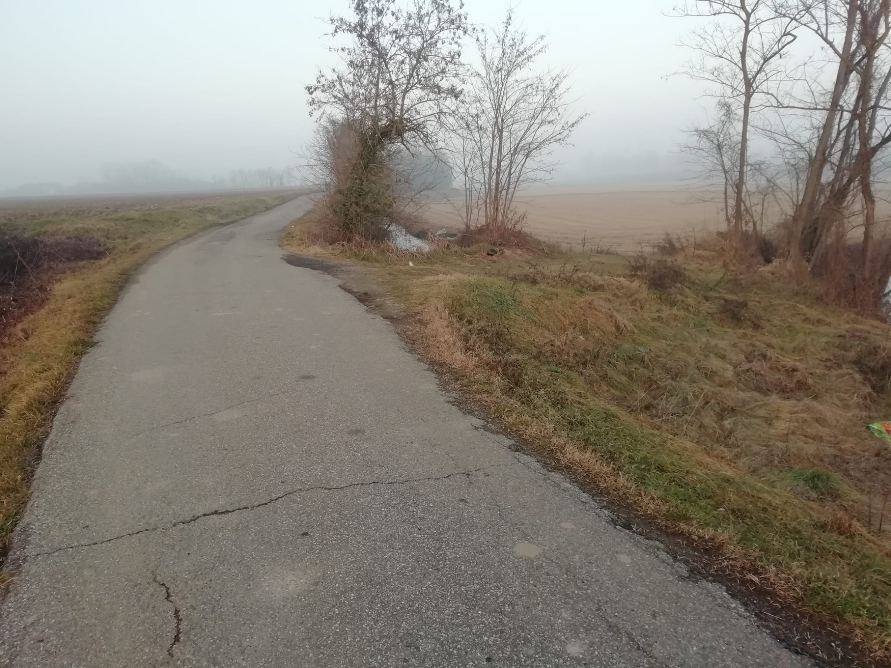
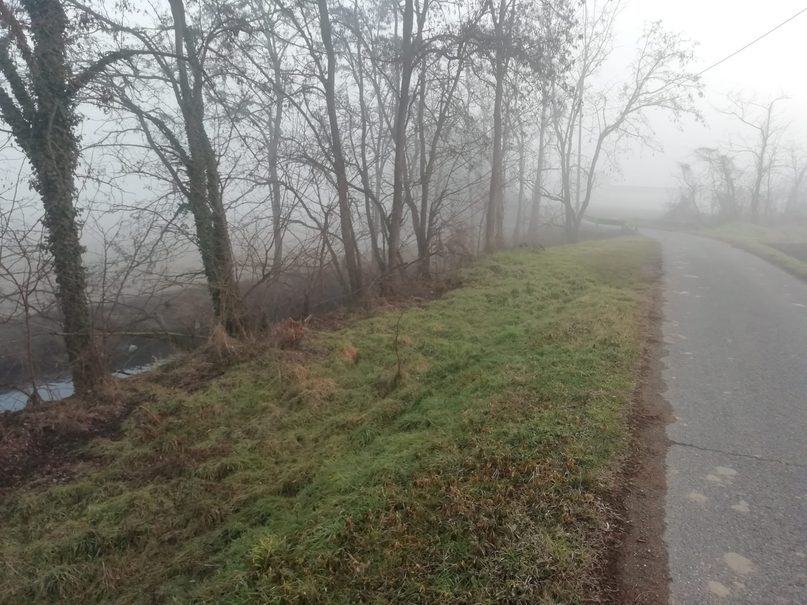
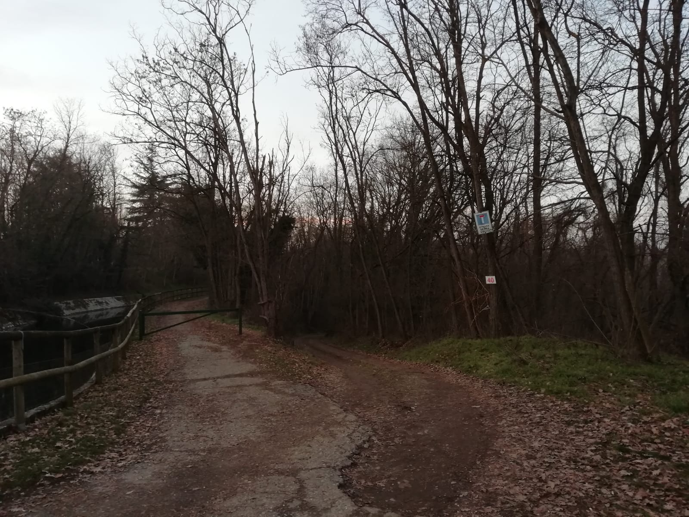
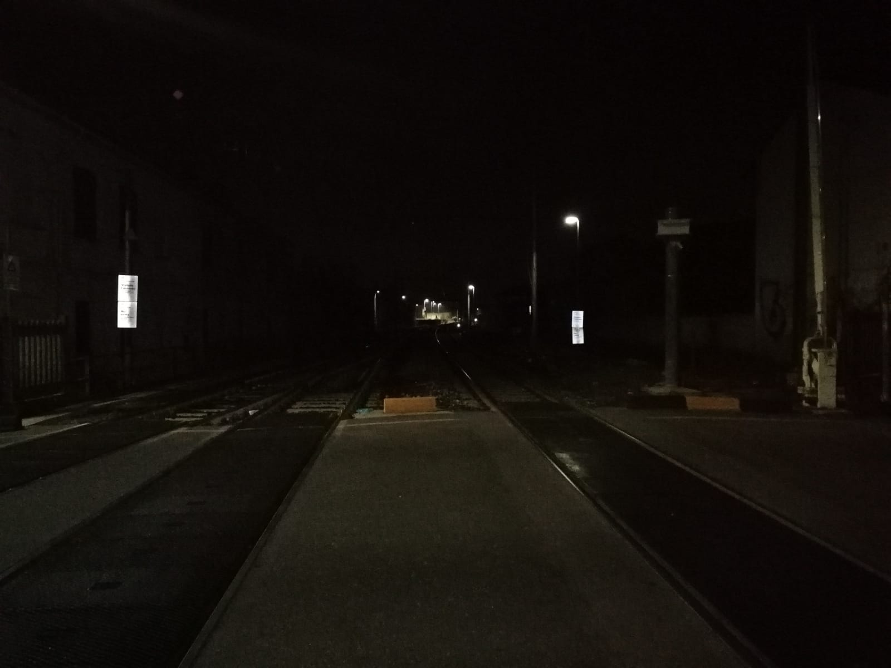

<!DOCTYPE html>
<head>
    <meta http-equiv="content-type" content="text/html; charset=UTF-8" />

        <script>
            L_NO_TOUCH = false;
            L_DISABLE_3D = false;
        </script>

    <style>html, body {width: 100%;height: 100%;margin: 0;padding: 0;}</style>
    <style>#map {position:absolute;top:0;bottom:0;right:0;left:0;}</style>
    <script src="https://cdn.jsdelivr.net/npm/leaflet@1.6.0/dist/leaflet.js"></script>
    <script src="https://code.jquery.com/jquery-1.12.4.min.js"></script>
    <script src="https://maxcdn.bootstrapcdn.com/bootstrap/3.2.0/js/bootstrap.min.js"></script>
    <script src="https://cdnjs.cloudflare.com/ajax/libs/Leaflet.awesome-markers/2.0.2/leaflet.awesome-markers.js"></script>
    <link rel="stylesheet" href="https://cdn.jsdelivr.net/npm/leaflet@1.6.0/dist/leaflet.css"/>
    <link rel="stylesheet" href="https://maxcdn.bootstrapcdn.com/bootstrap/3.2.0/css/bootstrap.min.css"/>
    <link rel="stylesheet" href="https://maxcdn.bootstrapcdn.com/bootstrap/3.2.0/css/bootstrap-theme.min.css"/>
    <link rel="stylesheet" href="https://maxcdn.bootstrapcdn.com/font-awesome/4.6.3/css/font-awesome.min.css"/>
    <link rel="stylesheet" href="https://cdnjs.cloudflare.com/ajax/libs/Leaflet.awesome-markers/2.0.2/leaflet.awesome-markers.css"/>
    <link rel="stylesheet" href="https://cdn.jsdelivr.net/gh/python-visualization/folium/folium/templates/leaflet.awesome.rotate.min.css"/>

            <meta name="viewport" content="width=device-width,
                initial-scale=1.0, maximum-scale=1.0, user-scalable=no" />
            <style>
                #map_e778bda8fa67454a885908ff0f70a294 {
                    position: relative;
                    width: 100.0%;
                    height: 100.0%;
                    left: 0.0%;
                    top: 0.0%;
                }
            </style>

</head>
<body>

            <div class="folium-map" id="map_e778bda8fa67454a885908ff0f70a294" ></div>

</body>
<script>

            var map_e778bda8fa67454a885908ff0f70a294 = L.map(
                "map_e778bda8fa67454a885908ff0f70a294",
                {
                    center: [45.3169681, 8.857812],
                    crs: L.CRS.EPSG3857,
                    maxBounds: [[45.279, 8.77], [45.4, 8.95]],
                    zoom: 14,
                    zoomControl: true,
                    preferCanvas: false,
                }
            );


            var tile_layer_6aae33337a6f480382b142345a9c8584 = L.tileLayer(
                "https://{s}.tile.openstreetmap.org/{z}/{x}/{y}.png",
                {"attribution": "Data by \u0026copy; \u003ca href=\"http://openstreetmap.org\"\u003eOpenStreetMap\u003c/a\u003e, under \u003ca href=\"http://www.openstreetmap.org/copyright\"\u003eODbL\u003c/a\u003e.", "detectRetina": false, "maxNativeZoom": 18, "maxZoom": 18, "minZoom": 14, "noWrap": false, "opacity": 1, "subdomains": "abc", "tms": false}
            ).addTo(map_e778bda8fa67454a885908ff0f70a294);


            var marker_11127ef78e2e40d2a3e1e8b10659516e = L.marker(
                [45.3230625, 8.850245651],
                {}
            ).addTo(map_e778bda8fa67454a885908ff0f70a294);


        var custom_icon_f6e4ab40deb44f9a92d81061486b9295 = L.icon({"iconSize": [30, 30], "iconUrl": "https://emojipedia-us.s3.dualstack.us-west-1.amazonaws.com/thumbs/120/whatsapp/314/speaker-low-volume_1f508.png"});
        marker_11127ef78e2e40d2a3e1e8b10659516e.setIcon(custom_icon_f6e4ab40deb44f9a92d81061486b9295);


        var popup_8971c8a38ad8446291e63894e08245c1 = L.popup({"maxWidth": "270"});


            var html_9b443d47fbeb4805a0fd09ba4624a040 = $(`<div id="html_9b443d47fbeb4805a0fd09ba4624a040" style="width: 100.0%; height: 100.0%;">                      <h1 style = "font-size: 30px;"><b>Pizzeria</b></h1>                       <br>                               PLACEHOLDER                      <br><br>                       <i>Guido                                         <audio id="audio_GU_VIALE_MONTEGRAPPA_PIZZERIA" loop>                      <source src="dati/GU_VIALE_MONTEGRAPPA_PIZZERIA/pizzeria.mp3" type="audio/mpeg">                      </audio>                      </div>`)[0];
            popup_8971c8a38ad8446291e63894e08245c1.setContent(html_9b443d47fbeb4805a0fd09ba4624a040);


        marker_11127ef78e2e40d2a3e1e8b10659516e.bindPopup(popup_8971c8a38ad8446291e63894e08245c1)
marker_11127ef78e2e40d2a3e1e8b10659516e.on('click', function (e) {this.openPopup(); document.getElementById('audio_GU_VIALE_MONTEGRAPPA_PIZZERIA').play();});
        ;


            var marker_7cc6a6b1c0c0401e8a7b63b99d1e2bf8 = L.marker(
                [45.31211904, 8.860001045],
                {}
            ).addTo(map_e778bda8fa67454a885908ff0f70a294);


        var custom_icon_7bc8440a5b0942e5889787f623b57712 = L.icon({"iconSize": [30, 30], "iconUrl": "https://emojipedia-us.s3.dualstack.us-west-1.amazonaws.com/thumbs/120/whatsapp/314/speaker-low-volume_1f508.png"});
        marker_7cc6a6b1c0c0401e8a7b63b99d1e2bf8.setIcon(custom_icon_7bc8440a5b0942e5889787f623b57712);


        var popup_f7c8c71758304861adc7363057b471c4 = L.popup({"maxWidth": "270"});


            var html_18f3a597d23343d0bdd5c546e7578284 = $(`<div id="html_18f3a597d23343d0bdd5c546e7578284" style="width: 100.0%; height: 100.0%;">                      <h1 style = "font-size: 30px;"><b>Giacchetta Canale</b></h1>                       <br>                               PLACEHOLDER                      <br><br>                       <i>Guido                                         <audio id="audio_GU_GIACCHETTA_CANALE" loop>                      <source src="dati/GU_GIACCHETTA_CANALE/ZOOM0027.mp3" type="audio/mpeg">                      </audio>                      </div>`)[0];
            popup_f7c8c71758304861adc7363057b471c4.setContent(html_18f3a597d23343d0bdd5c546e7578284);


        marker_7cc6a6b1c0c0401e8a7b63b99d1e2bf8.bindPopup(popup_f7c8c71758304861adc7363057b471c4)
marker_7cc6a6b1c0c0401e8a7b63b99d1e2bf8.on('click', function (e) {this.openPopup(); document.getElementById('audio_GU_GIACCHETTA_CANALE').play();});
        ;


            var marker_d8d63a87ed204811a94b5f50b9a13797 = L.marker(
                [45.3064081, 8.866924562],
                {}
            ).addTo(map_e778bda8fa67454a885908ff0f70a294);


        var custom_icon_2816b67abbf948d196d45c47f4cf73cb = L.icon({"iconSize": [30, 30], "iconUrl": "https://emojipedia-us.s3.dualstack.us-west-1.amazonaws.com/thumbs/120/whatsapp/314/speaker-low-volume_1f508.png"});
        marker_d8d63a87ed204811a94b5f50b9a13797.setIcon(custom_icon_2816b67abbf948d196d45c47f4cf73cb);


        var popup_7a3fe65e045541a28531e2bad35be6e5 = L.popup({"maxWidth": "270"});


            var html_757030c598914b75bf80e95a3c70a5a5 = $(`<div id="html_757030c598914b75bf80e95a3c70a5a5" style="width: 100.0%; height: 100.0%;">                      <h1 style = "font-size: 30px;"><b>Via de chirico Canale Pioggia</b></h1>                       <br>                               PLACEHOLDER                      <br><br>                       <i>Guido                                         <audio id="audio_GU_VIA_DE_CHIRICO_CANALE_v2" loop>                      <source src="dati/GU_VIA_DE_CHIRICO_CANALE_v2/ZOOM0029.mp3" type="audio/mpeg">                      </audio>                      </div>`)[0];
            popup_7a3fe65e045541a28531e2bad35be6e5.setContent(html_757030c598914b75bf80e95a3c70a5a5);


        marker_d8d63a87ed204811a94b5f50b9a13797.bindPopup(popup_7a3fe65e045541a28531e2bad35be6e5)
marker_d8d63a87ed204811a94b5f50b9a13797.on('click', function (e) {this.openPopup(); document.getElementById('audio_GU_VIA_DE_CHIRICO_CANALE_v2').play();});
        ;


            var marker_d41e709cde1b4d198989e7c141735efc = L.marker(
                [45.30644102, 8.889899845],
                {}
            ).addTo(map_e778bda8fa67454a885908ff0f70a294);


        var custom_icon_eebf0f2a20684103bdd6cfc8801966c2 = L.icon({"iconSize": [30, 30], "iconUrl": "https://emojipedia-us.s3.dualstack.us-west-1.amazonaws.com/thumbs/120/whatsapp/314/speaker-low-volume_1f508.png"});
        marker_d41e709cde1b4d198989e7c141735efc.setIcon(custom_icon_eebf0f2a20684103bdd6cfc8801966c2);


        var popup_a4948514362d428d9e3f011145083ab1 = L.popup({"maxWidth": "270"});


            var html_f64ee1dc553e4eb4ac7ab1edda5cf50d = $(`<div id="html_f64ee1dc553e4eb4ac7ab1edda5cf50d" style="width: 100.0%; height: 100.0%;">                      <h1 style = "font-size: 30px;"><b>Strada per laghi di santa marta</b></h1>                       <br>                               PLACEHOLDER                      <br><br>                       <i>Guido                                         <audio id="audio_GU_AGRITURISMO_COLDIRETTI" loop>                      <source src="dati/GU_AGRITURISMO_COLDIRETTI/ZOOM0025.mp3" type="audio/mpeg">                      </audio>                      </div>`)[0];
            popup_a4948514362d428d9e3f011145083ab1.setContent(html_f64ee1dc553e4eb4ac7ab1edda5cf50d);


        marker_d41e709cde1b4d198989e7c141735efc.bindPopup(popup_a4948514362d428d9e3f011145083ab1)
marker_d41e709cde1b4d198989e7c141735efc.on('click', function (e) {this.openPopup(); document.getElementById('audio_GU_AGRITURISMO_COLDIRETTI').play();});
        ;


            var marker_7726fcdad4d84a1e89f941baa234204a = L.marker(
                [45.29917137, 8.905742693],
                {}
            ).addTo(map_e778bda8fa67454a885908ff0f70a294);


        var custom_icon_fabe1e4e58ae41b29d1e48623ed6348a = L.icon({"iconSize": [30, 30], "iconUrl": "https://emojipedia-us.s3.dualstack.us-west-1.amazonaws.com/thumbs/120/whatsapp/314/speaker-low-volume_1f508.png"});
        marker_7726fcdad4d84a1e89f941baa234204a.setIcon(custom_icon_fabe1e4e58ae41b29d1e48623ed6348a);


        var popup_62f001ea10c142d0a04c7f7859e8cc3d = L.popup({"maxWidth": "270"});


            var html_cba8bd8bd0be40148287ec6a85106122 = $(`<div id="html_cba8bd8bd0be40148287ec6a85106122" style="width: 100.0%; height: 100.0%;">                      <h1 style = "font-size: 30px;"><b>Laghetto dei piccoli</b></h1>                       <br>                               PLACEHOLDER                      <br><br>                       <i>Guido                                         <audio id="audio_GU_LAGHETTO_DEI_PICCOLI" loop>                      <source src="dati/GU_LAGHETTO_DEI_PICCOLI/ZOOM0033.mp3" type="audio/mpeg">                      </audio>                      </div>`)[0];
            popup_62f001ea10c142d0a04c7f7859e8cc3d.setContent(html_cba8bd8bd0be40148287ec6a85106122);


        marker_7726fcdad4d84a1e89f941baa234204a.bindPopup(popup_62f001ea10c142d0a04c7f7859e8cc3d)
marker_7726fcdad4d84a1e89f941baa234204a.on('click', function (e) {this.openPopup(); document.getElementById('audio_GU_LAGHETTO_DEI_PICCOLI').play();});
        ;


            var marker_30fb8c864f574b7283ac5a421b241988 = L.marker(
                [45.31246512, 8.883821165],
                {}
            ).addTo(map_e778bda8fa67454a885908ff0f70a294);


        var custom_icon_37aa87131970497ba12f488eab121110 = L.icon({"iconSize": [30, 30], "iconUrl": "https://emojipedia-us.s3.dualstack.us-west-1.amazonaws.com/thumbs/120/whatsapp/314/speaker-low-volume_1f508.png"});
        marker_30fb8c864f574b7283ac5a421b241988.setIcon(custom_icon_37aa87131970497ba12f488eab121110);


        var popup_b628cf16aff74eeb8f16e8e3692d016e = L.popup({"maxWidth": "270"});


            var html_20a430324a45486c9cf392fe449edff5 = $(`<div id="html_20a430324a45486c9cf392fe449edff5" style="width: 100.0%; height: 100.0%;">                      <h1 style = "font-size: 30px;"><b>Miciopolis</b></h1>                       <br>                               PLACEHOLDER                      <br><br>                       <i>Guido                                         <audio id="audio_GU_MICIOPOLIS" loop>                      <source src="dati/GU_MICIOPOLIS/ZOOM0022.mp3" type="audio/mpeg">                      </audio>                      </div>`)[0];
            popup_b628cf16aff74eeb8f16e8e3692d016e.setContent(html_20a430324a45486c9cf392fe449edff5);


        marker_30fb8c864f574b7283ac5a421b241988.bindPopup(popup_b628cf16aff74eeb8f16e8e3692d016e)
marker_30fb8c864f574b7283ac5a421b241988.on('click', function (e) {this.openPopup(); document.getElementById('audio_GU_MICIOPOLIS').play();});
        ;


            var marker_aa5144aae9da4e33b54781235c5d3632 = L.marker(
                [45.30433837, 8.883231356],
                {}
            ).addTo(map_e778bda8fa67454a885908ff0f70a294);


        var custom_icon_5fa15e04cdbc461e93e875e57fe2d9d4 = L.icon({"iconSize": [30, 30], "iconUrl": "https://emojipedia-us.s3.dualstack.us-west-1.amazonaws.com/thumbs/120/whatsapp/314/speaker-low-volume_1f508.png"});
        marker_aa5144aae9da4e33b54781235c5d3632.setIcon(custom_icon_5fa15e04cdbc461e93e875e57fe2d9d4);


        var popup_9c89b454365e4c6eaaa66ab5da63c29f = L.popup({"maxWidth": "270"});


            var html_fbcc932dd81244e3bce9c7c69cdf3259 = $(`<div id="html_fbcc932dd81244e3bce9c7c69cdf3259" style="width: 100.0%; height: 100.0%;">                      <h1 style = "font-size: 30px;"><b>Strada per la Sforzesca</b></h1>                                             <br><br>                               PLACEHOLDER                      <br><br>                       <i>Guido                                         <audio id="audio_GU_STRADA_REBUFFI" loop>                      <source src="dati/GU_STRADA_REBUFFI/ZOOM0024.mp3" type="audio/mpeg">                      </audio>                      </div>`)[0];
            popup_9c89b454365e4c6eaaa66ab5da63c29f.setContent(html_fbcc932dd81244e3bce9c7c69cdf3259);


        marker_aa5144aae9da4e33b54781235c5d3632.bindPopup(popup_9c89b454365e4c6eaaa66ab5da63c29f)
marker_aa5144aae9da4e33b54781235c5d3632.on('click', function (e) {this.openPopup(); document.getElementById('audio_GU_STRADA_REBUFFI').play();});
        ;


            var marker_9134fc9c76924d108785a77b0e3c6302 = L.marker(
                [45.29236968, 8.884778005],
                {}
            ).addTo(map_e778bda8fa67454a885908ff0f70a294);


        var custom_icon_5e0aeb4c328043f09d20cc80ee66e671 = L.icon({"iconSize": [30, 30], "iconUrl": "https://emojipedia-us.s3.dualstack.us-west-1.amazonaws.com/thumbs/120/whatsapp/314/speaker-low-volume_1f508.png"});
        marker_9134fc9c76924d108785a77b0e3c6302.setIcon(custom_icon_5e0aeb4c328043f09d20cc80ee66e671);


        var popup_80befe764bf0496abb8788cc4bf6fd4b = L.popup({"maxWidth": "270"});


            var html_f7a49c69a6694042b18435a701145ef1 = $(`<div id="html_f7a49c69a6694042b18435a701145ef1" style="width: 100.0%; height: 100.0%;">                      <h1 style = "font-size: 30px;"><b>Cimitero musicale</b></h1>                                             <br><br>                               Mi ringrazia. Provo a suonare live sotto il suo suggerimento insieme ad altri amici.<br />Non sapendo suonare mi concentro timidamente sul Re. Rinuncio e chiudo il piano.<br />Il sottofondo è musica ambient e sono attorniato dal mio datore di lavoro.                      <br><br>                       <i>Guido                                         <audio id="audio_GU_STRADA_REBUFFI_v3" loop>                      <source src="dati/GU_STRADA_REBUFFI_v3/ZOOM0028.mp3" type="audio/mpeg">                      </audio>                      </div>`)[0];
            popup_80befe764bf0496abb8788cc4bf6fd4b.setContent(html_f7a49c69a6694042b18435a701145ef1);


        marker_9134fc9c76924d108785a77b0e3c6302.bindPopup(popup_80befe764bf0496abb8788cc4bf6fd4b)
marker_9134fc9c76924d108785a77b0e3c6302.on('click', function (e) {this.openPopup(); document.getElementById('audio_GU_STRADA_REBUFFI_v3').play();});
        ;


            var marker_7b09dbd39ec14a1b9ae88c3e28189ad5 = L.marker(
                [45.34084406, 8.867725439],
                {}
            ).addTo(map_e778bda8fa67454a885908ff0f70a294);


        var custom_icon_4fe7e19bd677489e825cf05dd254da55 = L.icon({"iconSize": [30, 30], "iconUrl": "https://emojipedia-us.s3.dualstack.us-west-1.amazonaws.com/thumbs/120/whatsapp/314/speaker-low-volume_1f508.png"});
        marker_7b09dbd39ec14a1b9ae88c3e28189ad5.setIcon(custom_icon_4fe7e19bd677489e825cf05dd254da55);


        var popup_82809341c8714e908da98c25afc5fe95 = L.popup({"maxWidth": "270"});


            var html_31743e51019d433dbab0b7a669849dc3 = $(`<div id="html_31743e51019d433dbab0b7a669849dc3" style="width: 100.0%; height: 100.0%;">                      <h1 style = "font-size: 30px;"><b>Rave a Ticino</b></h1>                                             <br><br>                               PLACEHOLDER                      <br><br>                       <i>Guido                                         <audio id="audio_GU_RAVE_TISIN_v1" loop>                      <source src="dati/GU_RAVE_TISIN_v1/ZOOM0025.mp3" type="audio/mpeg">                      </audio>                      </div>`)[0];
            popup_82809341c8714e908da98c25afc5fe95.setContent(html_31743e51019d433dbab0b7a669849dc3);


        marker_7b09dbd39ec14a1b9ae88c3e28189ad5.bindPopup(popup_82809341c8714e908da98c25afc5fe95)
marker_7b09dbd39ec14a1b9ae88c3e28189ad5.on('click', function (e) {this.openPopup(); document.getElementById('audio_GU_RAVE_TISIN_v1').play();});
        ;


            var marker_99879024c5a547338c6e54b2df115772 = L.marker(
                [45.34220987, 8.865593442],
                {}
            ).addTo(map_e778bda8fa67454a885908ff0f70a294);


        var custom_icon_24159c2078d5495f8cbd4faf23dbe0a3 = L.icon({"iconSize": [30, 30], "iconUrl": "https://emojipedia-us.s3.dualstack.us-west-1.amazonaws.com/thumbs/120/whatsapp/314/speaker-low-volume_1f508.png"});
        marker_99879024c5a547338c6e54b2df115772.setIcon(custom_icon_24159c2078d5495f8cbd4faf23dbe0a3);


        var popup_38ff466b6d33449d93be9a7a52b830b3 = L.popup({"maxWidth": "270"});


            var html_0af8626aab8b4f4ead2f8a40a3d33c9a = $(`<div id="html_0af8626aab8b4f4ead2f8a40a3d33c9a" style="width: 100.0%; height: 100.0%;">                      <h1 style = "font-size: 30px;"><b>Acqua dolce e cassa dritta</b></h1>                                             <br><br>                               PLACEHOLDER                      <br><br>                       <i>Guido                                         <audio id="audio_GU_RAVE_TISIN_v3" loop>                      <source src="dati/GU_RAVE_TISIN_v3/ZOOM0028.mp3" type="audio/mpeg">                      </audio>                      </div>`)[0];
            popup_38ff466b6d33449d93be9a7a52b830b3.setContent(html_0af8626aab8b4f4ead2f8a40a3d33c9a);


        marker_99879024c5a547338c6e54b2df115772.bindPopup(popup_38ff466b6d33449d93be9a7a52b830b3)
marker_99879024c5a547338c6e54b2df115772.on('click', function (e) {this.openPopup(); document.getElementById('audio_GU_RAVE_TISIN_v3').play();});
        ;


            var marker_3da999800aed46299670c262c143430a = L.marker(
                [45.34300948, 8.862928168],
                {}
            ).addTo(map_e778bda8fa67454a885908ff0f70a294);


        var custom_icon_0f066fa3867947f2af096b1ad29317da = L.icon({"iconSize": [30, 30], "iconUrl": "https://emojipedia-us.s3.dualstack.us-west-1.amazonaws.com/thumbs/120/whatsapp/314/speaker-low-volume_1f508.png"});
        marker_3da999800aed46299670c262c143430a.setIcon(custom_icon_0f066fa3867947f2af096b1ad29317da);


        var popup_a106a9f20c9d45929bb355cd3979435d = L.popup({"maxWidth": "270"});


            var html_249032cd7712418fa41e2a570529a90e = $(`<div id="html_249032cd7712418fa41e2a570529a90e" style="width: 100.0%; height: 100.0%;">                      <h1 style = "font-size: 30px;"><b>Birds of Rocca Petrella</b></h1>                                             <br><br>                               Qua si sente bene<br /><br />Avrei voluto scendere ma non era possibile a causa di una stramaledetta proprietà privata<br /><br />Tantè                      <br><br>                       <i>Guido                                         <audio id="audio_GU_ROCCA_PETRELLA" loop>                      <source src="dati/GU_ROCCA_PETRELLA/ZOOM0033.mp3" type="audio/mpeg">                      </audio>                      </div>`)[0];
            popup_a106a9f20c9d45929bb355cd3979435d.setContent(html_249032cd7712418fa41e2a570529a90e);


        marker_3da999800aed46299670c262c143430a.bindPopup(popup_a106a9f20c9d45929bb355cd3979435d)
marker_3da999800aed46299670c262c143430a.on('click', function (e) {this.openPopup(); document.getElementById('audio_GU_ROCCA_PETRELLA').play();});
        ;


            var marker_4210b229d7044e5cac6061476d195325 = L.marker(
                [45.33842032, 8.87050925],
                {}
            ).addTo(map_e778bda8fa67454a885908ff0f70a294);


        var custom_icon_a0a60f9d5b2c4dbea9003741135e7082 = L.icon({"iconSize": [30, 30], "iconUrl": "https://emojipedia-us.s3.dualstack.us-west-1.amazonaws.com/thumbs/120/whatsapp/314/speaker-low-volume_1f508.png"});
        marker_4210b229d7044e5cac6061476d195325.setIcon(custom_icon_a0a60f9d5b2c4dbea9003741135e7082);


        var popup_3e0c2a22010a4dc393c1ca95bf94c73d = L.popup({"maxWidth": "270"});


            var html_89daf6ec16274bc288cec94eb7fd07eb = $(`<div id="html_89daf6ec16274bc288cec94eb7fd07eb" style="width: 100.0%; height: 100.0%;">                      <h1 style = "font-size: 30px;"><b>UFO e ciclismo</b></h1>                       <br>                               PLACEHOLDER                      <br><br>                       <i>Guido                                         <audio id="audio_GU_CENTRALE_ENEL_v2" loop>                      <source src="dati/GU_CENTRALE_ENEL_v2/ZOOM0037.mp3" type="audio/mpeg">                      </audio>                      </div>`)[0];
            popup_3e0c2a22010a4dc393c1ca95bf94c73d.setContent(html_89daf6ec16274bc288cec94eb7fd07eb);


        marker_4210b229d7044e5cac6061476d195325.bindPopup(popup_3e0c2a22010a4dc393c1ca95bf94c73d)
marker_4210b229d7044e5cac6061476d195325.on('click', function (e) {this.openPopup(); document.getElementById('audio_GU_CENTRALE_ENEL_v2').play();});
        ;


            var marker_1710c940137c4cd58f161adaeb3766ec = L.marker(
                [45.34069404, 8.878451395],
                {}
            ).addTo(map_e778bda8fa67454a885908ff0f70a294);


        var custom_icon_e742beb4d2b8404e94be7d1c56621fcd = L.icon({"iconSize": [30, 30], "iconUrl": "https://emojipedia-us.s3.dualstack.us-west-1.amazonaws.com/thumbs/120/whatsapp/314/speaker-low-volume_1f508.png"});
        marker_1710c940137c4cd58f161adaeb3766ec.setIcon(custom_icon_e742beb4d2b8404e94be7d1c56621fcd);


        var popup_247babfad2a845ea8a3b11c8db6d94b0 = L.popup({"maxWidth": "270"});


            var html_c9e13ac9703a4e0ea5802e5a927f743e = $(`<div id="html_c9e13ac9703a4e0ea5802e5a927f743e" style="width: 100.0%; height: 100.0%;">                      <h1 style = "font-size: 30px;"><b>Fiume azzurro</b></h1>                       <br>                               PLACEHOLDER                      <br><br>                       <i>Guido                                         <audio id="audio_GU_TICINO_v3" loop>                      <source src="dati/GU_TICINO_v3/ZOOM0026.mp3" type="audio/mpeg">                      </audio>                      </div>`)[0];
            popup_247babfad2a845ea8a3b11c8db6d94b0.setContent(html_c9e13ac9703a4e0ea5802e5a927f743e);


        marker_1710c940137c4cd58f161adaeb3766ec.bindPopup(popup_247babfad2a845ea8a3b11c8db6d94b0)
marker_1710c940137c4cd58f161adaeb3766ec.on('click', function (e) {this.openPopup(); document.getElementById('audio_GU_TICINO_v3').play();});
        ;


            var marker_d1e4268fe4144900a6a06e30762d3ef9 = L.marker(
                [45.33987551, 8.88500919],
                {}
            ).addTo(map_e778bda8fa67454a885908ff0f70a294);


        var custom_icon_60568deb0323448ca94f53f170df2c50 = L.icon({"iconSize": [30, 30], "iconUrl": "https://emojipedia-us.s3.dualstack.us-west-1.amazonaws.com/thumbs/120/whatsapp/314/speaker-low-volume_1f508.png"});
        marker_d1e4268fe4144900a6a06e30762d3ef9.setIcon(custom_icon_60568deb0323448ca94f53f170df2c50);


        var popup_b031385617194fd7baca7754f9ee15e1 = L.popup({"maxWidth": "270"});


            var html_681079f1a62f4ed99f7552b669c2a69d = $(`<div id="html_681079f1a62f4ed99f7552b669c2a69d" style="width: 100.0%; height: 100.0%;">                      <h1 style = "font-size: 30px;"><b>Cigni fx</b></h1>                       <br>                               PLACEHOLDER                      <br><br>                       <i>Guido                                         <audio id="audio_GU_TICINO_v4" loop>                      <source src="dati/GU_TICINO_v4/ZOOM0027.mp3" type="audio/mpeg">                      </audio>                      </div>`)[0];
            popup_b031385617194fd7baca7754f9ee15e1.setContent(html_681079f1a62f4ed99f7552b669c2a69d);


        marker_d1e4268fe4144900a6a06e30762d3ef9.bindPopup(popup_b031385617194fd7baca7754f9ee15e1)
marker_d1e4268fe4144900a6a06e30762d3ef9.on('click', function (e) {this.openPopup(); document.getElementById('audio_GU_TICINO_v4').play();});
        ;


            var marker_b3504860a34440d5a1f574d11bafafe0 = L.marker(
                [45.33114616, 8.861188604],
                {}
            ).addTo(map_e778bda8fa67454a885908ff0f70a294);


        var custom_icon_5f9cd08eaa53453ca46a3967e0fdabc3 = L.icon({"iconSize": [30, 30], "iconUrl": "https://emojipedia-us.s3.dualstack.us-west-1.amazonaws.com/thumbs/120/whatsapp/314/speaker-low-volume_1f508.png"});
        marker_b3504860a34440d5a1f574d11bafafe0.setIcon(custom_icon_5f9cd08eaa53453ca46a3967e0fdabc3);


        var popup_de6b624d35e64cb89666198a4d5781b5 = L.popup({"maxWidth": "270"});


            var html_d5844bf3fe5648be959e5278b84f8f3c = $(`<div id="html_d5844bf3fe5648be959e5278b84f8f3c" style="width: 100.0%; height: 100.0%;">                      <h1 style = "font-size: 30px;"><b>What are you doing here? Get the F out!!!</b></h1>                       <br>                               PLACEHOLDER                      <br><br>                       <i>Guido                                         <audio id="audio_GU_POLIGONO" loop>                      <source src="dati/GU_POLIGONO/ZOOM0031.mp3" type="audio/mpeg">                      </audio>                      </div>`)[0];
            popup_de6b624d35e64cb89666198a4d5781b5.setContent(html_d5844bf3fe5648be959e5278b84f8f3c);


        marker_b3504860a34440d5a1f574d11bafafe0.bindPopup(popup_de6b624d35e64cb89666198a4d5781b5)
marker_b3504860a34440d5a1f574d11bafafe0.on('click', function (e) {this.openPopup(); document.getElementById('audio_GU_POLIGONO').play();});
        ;


            var marker_23c44cfbf786498da62c190dfb8bf30d = L.marker(
                [45.33321272, 8.860613964],
                {}
            ).addTo(map_e778bda8fa67454a885908ff0f70a294);


        var custom_icon_c49f82aaff9a45c39feec89eb84d6270 = L.icon({"iconSize": [30, 30], "iconUrl": "https://emojipedia-us.s3.dualstack.us-west-1.amazonaws.com/thumbs/120/whatsapp/314/speaker-low-volume_1f508.png"});
        marker_23c44cfbf786498da62c190dfb8bf30d.setIcon(custom_icon_c49f82aaff9a45c39feec89eb84d6270);


        var popup_ba09b9fee7c64d9d90580d3c13a31bef = L.popup({"maxWidth": "270"});


            var html_e05e01252781448f8c48327aa1806b01 = $(`<div id="html_e05e01252781448f8c48327aa1806b01" style="width: 100.0%; height: 100.0%;">                      <h1 style = "font-size: 30px;"><b>Campane</b></h1>                       <br>                               PLACEHOLDER                      <br><br>                       <i>Guido                                         <audio id="audio_GU_STRADA_MORABASSA" loop>                      <source src="dati/GU_STRADA_MORABASSA/ZOOM0032.mp3" type="audio/mpeg">                      </audio>                      </div>`)[0];
            popup_ba09b9fee7c64d9d90580d3c13a31bef.setContent(html_e05e01252781448f8c48327aa1806b01);


        marker_23c44cfbf786498da62c190dfb8bf30d.bindPopup(popup_ba09b9fee7c64d9d90580d3c13a31bef)
marker_23c44cfbf786498da62c190dfb8bf30d.on('click', function (e) {this.openPopup(); document.getElementById('audio_GU_STRADA_MORABASSA').play();});
        ;


            var marker_b9bc06f3c3f24251a485164f729a26bc = L.marker(
                [45.3200354, 8.855686002],
                {}
            ).addTo(map_e778bda8fa67454a885908ff0f70a294);


        var custom_icon_d787547dce654cd29b11c3e33868540d = L.icon({"iconSize": [30, 30], "iconUrl": "https://emojipedia-us.s3.dualstack.us-west-1.amazonaws.com/thumbs/120/whatsapp/314/speaker-low-volume_1f508.png"});
        marker_b9bc06f3c3f24251a485164f729a26bc.setIcon(custom_icon_d787547dce654cd29b11c3e33868540d);


        var popup_0fc130d2c6bc4885919f17d7ff3276cc = L.popup({"maxWidth": "270"});


            var html_01f3133292f2478f84439a5da6dc90f0 = $(`<div id="html_01f3133292f2478f84439a5da6dc90f0" style="width: 100.0%; height: 100.0%;">                      <h1 style = "font-size: 30px;"><b>Pavè</b></h1>                       <br>                               PLACEHOLDER                      <br><br>                       <i>Guido                                         <audio id="audio_GU_MADONNA_7_DOLORI" loop>                      <source src="dati/GU_MADONNA_7_DOLORI/ZOOM0023.mp3" type="audio/mpeg">                      </audio>                      </div>`)[0];
            popup_0fc130d2c6bc4885919f17d7ff3276cc.setContent(html_01f3133292f2478f84439a5da6dc90f0);


        marker_b9bc06f3c3f24251a485164f729a26bc.bindPopup(popup_0fc130d2c6bc4885919f17d7ff3276cc)
marker_b9bc06f3c3f24251a485164f729a26bc.on('click', function (e) {this.openPopup(); document.getElementById('audio_GU_MADONNA_7_DOLORI').play();});
        ;


            var marker_fcac2e04c46042f0a2b43f03010a2dca = L.marker(
                [45.316389, 8.856819],
                {}
            ).addTo(map_e778bda8fa67454a885908ff0f70a294);


        var custom_icon_ea9e4ff13568484c9ff2e7b58eac768e = L.icon({"iconSize": [30, 30], "iconUrl": "https://emojipedia-us.s3.dualstack.us-west-1.amazonaws.com/thumbs/120/whatsapp/314/speaker-low-volume_1f508.png"});
        marker_fcac2e04c46042f0a2b43f03010a2dca.setIcon(custom_icon_ea9e4ff13568484c9ff2e7b58eac768e);


        var popup_53cec4496def4c3aa0cddcc48dd3d674 = L.popup({"maxWidth": "270"});


            var html_199f35e0428242cfb867503d71931599 = $(`<div id="html_199f35e0428242cfb867503d71931599" style="width: 100.0%; height: 100.0%;">                      <h1 style = "font-size: 30px;"><b>Castello alle 18</b></h1>                       <br>                               PLACEHOLDER                      <br><br>                       <i>Andrea                                         <audio id="audio_AN_CASTELLO_ORE_18" loop>                      <source src="dati/AN_CASTELLO_ORE_18/castello ore 18.mp3" type="audio/mpeg">                      </audio>                      </div>`)[0];
            popup_53cec4496def4c3aa0cddcc48dd3d674.setContent(html_199f35e0428242cfb867503d71931599);


        marker_fcac2e04c46042f0a2b43f03010a2dca.bindPopup(popup_53cec4496def4c3aa0cddcc48dd3d674)
marker_fcac2e04c46042f0a2b43f03010a2dca.on('click', function (e) {this.openPopup(); document.getElementById('audio_AN_CASTELLO_ORE_18').play();});
        ;


            var marker_6809bb4a584c4eb18e3bd26a71824d55 = L.marker(
                [45.315783, 8.856105],
                {}
            ).addTo(map_e778bda8fa67454a885908ff0f70a294);


        var custom_icon_dea5b563c5d545d7be20cb9816aac0ef = L.icon({"iconSize": [30, 30], "iconUrl": "https://emojipedia-us.s3.dualstack.us-west-1.amazonaws.com/thumbs/120/whatsapp/314/speaker-low-volume_1f508.png"});
        marker_6809bb4a584c4eb18e3bd26a71824d55.setIcon(custom_icon_dea5b563c5d545d7be20cb9816aac0ef);


        var popup_4116ecde27594ede8784e071a69f9e1d = L.popup({"maxWidth": "270"});


            var html_cc11df67be544c0b97cf524c8e7d9cd8 = $(`<div id="html_cc11df67be544c0b97cf524c8e7d9cd8" style="width: 100.0%; height: 100.0%;">                      <h1 style = "font-size: 30px;"><b>Portone</b></h1>                       <br>                               PLACEHOLDER                      <br><br>                       <i>Andrea                                         <audio id="audio_AN_PORTONE" loop>                      <source src="dati/AN_PORTONE/portone.mp3" type="audio/mpeg">                      </audio>                      </div>`)[0];
            popup_4116ecde27594ede8784e071a69f9e1d.setContent(html_cc11df67be544c0b97cf524c8e7d9cd8);


        marker_6809bb4a584c4eb18e3bd26a71824d55.bindPopup(popup_4116ecde27594ede8784e071a69f9e1d)
marker_6809bb4a584c4eb18e3bd26a71824d55.on('click', function (e) {this.openPopup(); document.getElementById('audio_AN_PORTONE').play();});
        ;


            var marker_123722f5d5464d13a43f5ec3f48cbfbd = L.marker(
                [45.314307, 8.854067],
                {}
            ).addTo(map_e778bda8fa67454a885908ff0f70a294);


        var custom_icon_ad2625d1ff8d4c759c4dba09bee0b36b = L.icon({"iconSize": [30, 30], "iconUrl": "https://emojipedia-us.s3.dualstack.us-west-1.amazonaws.com/thumbs/120/whatsapp/314/speaker-low-volume_1f508.png"});
        marker_123722f5d5464d13a43f5ec3f48cbfbd.setIcon(custom_icon_ad2625d1ff8d4c759c4dba09bee0b36b);


        var popup_0fc797d6f1e74f28b52bdbb10560d187 = L.popup({"maxWidth": "270"});


            var html_5a359015baed427e8babb89b82fb8a30 = $(`<div id="html_5a359015baed427e8babb89b82fb8a30" style="width: 100.0%; height: 100.0%;">                      <h1 style = "font-size: 30px;"><b>Via Mulini</b></h1>                       <br>                               PLACEHOLDER                      <br><br>                       <i>Andrea                                         <audio id="audio_AN_VIA_MULINI" loop>                      <source src="dati/AN_VIA_MULINI/via mulini acqua.mp3" type="audio/mpeg">                      </audio>                      </div>`)[0];
            popup_0fc797d6f1e74f28b52bdbb10560d187.setContent(html_5a359015baed427e8babb89b82fb8a30);


        marker_123722f5d5464d13a43f5ec3f48cbfbd.bindPopup(popup_0fc797d6f1e74f28b52bdbb10560d187)
marker_123722f5d5464d13a43f5ec3f48cbfbd.on('click', function (e) {this.openPopup(); document.getElementById('audio_AN_VIA_MULINI').play();});
        ;


            var marker_4625bd2820144a628c0d90c437da6e84 = L.marker(
                [45.314712, 8.850959],
                {}
            ).addTo(map_e778bda8fa67454a885908ff0f70a294);


        var custom_icon_3d089774f34a42cc9f4efea52845a2c9 = L.icon({"iconSize": [30, 30], "iconUrl": "https://emojipedia-us.s3.dualstack.us-west-1.amazonaws.com/thumbs/120/whatsapp/314/speaker-low-volume_1f508.png"});
        marker_4625bd2820144a628c0d90c437da6e84.setIcon(custom_icon_3d089774f34a42cc9f4efea52845a2c9);


        var popup_60a019c92ca24dec8f0dfcb663b22f58 = L.popup({"maxWidth": "270"});


            var html_5fff9a199db64f61bd720f4734935b43 = $(`<div id="html_5fff9a199db64f61bd720f4734935b43" style="width: 100.0%; height: 100.0%;">                      <h1 style = "font-size: 30px;"><b>Traffico di Corso Torino</b></h1>                       <br>                               PLACEHOLDER                      <br><br>                       <i>Alice                                         <audio id="audio_AL_CORSO_TORINO_TRAFFICO" loop>                      <source src="dati/AL_CORSO_TORINO_TRAFFICO/corso torino 9 traffico.mp3" type="audio/mpeg">                      </audio>                      </div>`)[0];
            popup_60a019c92ca24dec8f0dfcb663b22f58.setContent(html_5fff9a199db64f61bd720f4734935b43);


        marker_4625bd2820144a628c0d90c437da6e84.bindPopup(popup_60a019c92ca24dec8f0dfcb663b22f58)
marker_4625bd2820144a628c0d90c437da6e84.on('click', function (e) {this.openPopup(); document.getElementById('audio_AL_CORSO_TORINO_TRAFFICO').play();});
        ;


            var marker_0710d73b28e34e65a92afcb123f001bc = L.marker(
                [45.314191, 8.854374],
                {}
            ).addTo(map_e778bda8fa67454a885908ff0f70a294);


        var custom_icon_307736c068a6466597a990238b873796 = L.icon({"iconSize": [30, 30], "iconUrl": "https://emojipedia-us.s3.dualstack.us-west-1.amazonaws.com/thumbs/120/whatsapp/314/speaker-low-volume_1f508.png"});
        marker_0710d73b28e34e65a92afcb123f001bc.setIcon(custom_icon_307736c068a6466597a990238b873796);


        var popup_6262962c59924dc7b882574492a19625 = L.popup({"maxWidth": "270"});


            var html_2e63e4485c874c318046e6db87a7ce42 = $(`<div id="html_2e63e4485c874c318046e6db87a7ce42" style="width: 100.0%; height: 100.0%;">                      <h1 style = "font-size: 30px;"><b>Il mulino di Via Mulini</b></h1>                       <br>                               PLACEHOLDER                      <br><br>                       <i>Alice                                         <audio id="audio_AL_VIA_MULINI_MULINO" loop>                      <source src="dati/AL_VIA_MULINI_MULINO/mulino via mulini.mp3" type="audio/mpeg">                      </audio>                      </div>`)[0];
            popup_6262962c59924dc7b882574492a19625.setContent(html_2e63e4485c874c318046e6db87a7ce42);


        marker_0710d73b28e34e65a92afcb123f001bc.bindPopup(popup_6262962c59924dc7b882574492a19625)
marker_0710d73b28e34e65a92afcb123f001bc.on('click', function (e) {this.openPopup(); document.getElementById('audio_AL_VIA_MULINI_MULINO').play();});
        ;


            var marker_32b29f3520f84e149f3b3fb2ad4f3fed = L.marker(
                [45.316204, 8.864677],
                {}
            ).addTo(map_e778bda8fa67454a885908ff0f70a294);


        var custom_icon_e4df322575b442c9a2bc869bb43c8655 = L.icon({"iconSize": [30, 30], "iconUrl": "https://emojipedia-us.s3.dualstack.us-west-1.amazonaws.com/thumbs/120/whatsapp/314/speaker-low-volume_1f508.png"});
        marker_32b29f3520f84e149f3b3fb2ad4f3fed.setIcon(custom_icon_e4df322575b442c9a2bc869bb43c8655);


        var popup_007a20a2343546069a3e858c90a72ac3 = L.popup({"maxWidth": "270"});


            var html_0f3a5ce1fefb4881b00d638c8daa4a79 = $(`<div id="html_0f3a5ce1fefb4881b00d638c8daa4a79" style="width: 100.0%; height: 100.0%;">                      <h1 style = "font-size: 30px;"><b>Treno per Milano</b></h1>                       <br>                               Registrato con la "paura" del fraintendimento relativo ai recenti fatti di cronaca.                      <br><br>                       <i>Guido                                         <audio id="audio_GU_TRENO_FERRARI" loop>                      <source src="dati/GU_TRENO_FERRARI/ZOOM0023.mp3" type="audio/mpeg">                      </audio>                      </div>`)[0];
            popup_007a20a2343546069a3e858c90a72ac3.setContent(html_0f3a5ce1fefb4881b00d638c8daa4a79);


        marker_32b29f3520f84e149f3b3fb2ad4f3fed.bindPopup(popup_007a20a2343546069a3e858c90a72ac3)
marker_32b29f3520f84e149f3b3fb2ad4f3fed.on('click', function (e) {this.openPopup(); document.getElementById('audio_GU_TRENO_FERRARI').play();});
        ;


            var marker_425af81314a64ba097744fc0408e2fc7 = L.marker(
                [45.311018, 8.860711],
                {}
            ).addTo(map_e778bda8fa67454a885908ff0f70a294);


        var custom_icon_8916050d28854eb2bd9c82ed654f220f = L.icon({"iconSize": [30, 30], "iconUrl": "https://emojipedia-us.s3.dualstack.us-west-1.amazonaws.com/thumbs/120/whatsapp/314/speaker-low-volume_1f508.png"});
        marker_425af81314a64ba097744fc0408e2fc7.setIcon(custom_icon_8916050d28854eb2bd9c82ed654f220f);


        var popup_869132b97b9b4c81870cd87254544675 = L.popup({"maxWidth": "270"});


            var html_5cb12c3849094c76953c6d058854e02a = $(`<div id="html_5cb12c3849094c76953c6d058854e02a" style="width: 100.0%; height: 100.0%;">                      <h1 style = "font-size: 30px;"><b>Treno per Mortara</b></h1>                                             <br><br>                               Sono genuinamente impressionato dal suono che fanno le sbarre quando si alzano e non credo avrei potuto aprezzarlo a un orario diverso.<br /><br />Good job "famosa società operante nel settore del trasporto ferroviario della regione che inizia con la L e non è Liguria".                      <br><br>                       <i>Guido                                         <audio id="audio_GU_TRENO_BERCLEDA" loop>                      <source src="dati/GU_TRENO_BERCLEDA/ZOOM0024.mp3" type="audio/mpeg">                      </audio>                      </div>`)[0];
            popup_869132b97b9b4c81870cd87254544675.setContent(html_5cb12c3849094c76953c6d058854e02a);


        marker_425af81314a64ba097744fc0408e2fc7.bindPopup(popup_869132b97b9b4c81870cd87254544675)
marker_425af81314a64ba097744fc0408e2fc7.on('click', function (e) {this.openPopup(); document.getElementById('audio_GU_TRENO_BERCLEDA').play();});
        ;


            var marker_6f83c9a2d08543f281a240a709eaf99a = L.marker(
                [45.319865, 8.910479],
                {}
            ).addTo(map_e778bda8fa67454a885908ff0f70a294);


        var custom_icon_01d12bc87db34404bc8a2ade0746b48d = L.icon({"iconSize": [30, 30], "iconUrl": "https://emojipedia-us.s3.dualstack.us-west-1.amazonaws.com/thumbs/120/whatsapp/314/speaker-low-volume_1f508.png"});
        marker_6f83c9a2d08543f281a240a709eaf99a.setIcon(custom_icon_01d12bc87db34404bc8a2ade0746b48d);


        var popup_8d218dd0890c44c28feb7879a3904c6a = L.popup({"maxWidth": "270"});


            var html_7d6e05b308fc478fb2faac4a7d6d4617 = $(`<div id="html_7d6e05b308fc478fb2faac4a7d6d4617" style="width: 100.0%; height: 100.0%;">                      <h1 style = "font-size: 30px;"><b>Papere</b></h1>                                             <br><br>                               PLACEHOLDER<br />                      <br><br>                       <i>Alice                                         <audio id="audio_AL_AYALA" loop>                      <source src="dati/AL_AYALA/Copia di ayala-papere.mp3" type="audio/mpeg">                      </audio>                      </div>`)[0];
            popup_8d218dd0890c44c28feb7879a3904c6a.setContent(html_7d6e05b308fc478fb2faac4a7d6d4617);


        marker_6f83c9a2d08543f281a240a709eaf99a.bindPopup(popup_8d218dd0890c44c28feb7879a3904c6a)
marker_6f83c9a2d08543f281a240a709eaf99a.on('click', function (e) {this.openPopup(); document.getElementById('audio_AL_AYALA').play();});
        ;


            var marker_47214ac4345545fca4cc3c95c23d075a = L.marker(
                [45.319209, 8.911778],
                {}
            ).addTo(map_e778bda8fa67454a885908ff0f70a294);


        var custom_icon_f9a4abd9736c42d7869632dee6fcccc2 = L.icon({"iconSize": [30, 30], "iconUrl": "https://emojipedia-us.s3.dualstack.us-west-1.amazonaws.com/thumbs/120/whatsapp/314/speaker-low-volume_1f508.png"});
        marker_47214ac4345545fca4cc3c95c23d075a.setIcon(custom_icon_f9a4abd9736c42d7869632dee6fcccc2);


        var popup_289c93b8aa354a9587ccef85c8ab383e = L.popup({"maxWidth": "270"});


            var html_b3645c07f0c041d18807e6439ee17bc2 = $(`<div id="html_b3645c07f0c041d18807e6439ee17bc2" style="width: 100.0%; height: 100.0%;">                      <h1 style = "font-size: 30px;"><b>Gallinelle</b></h1>                       <br>                               PLACEHOLDER<br />                      <br><br>                       <i>Alice                                         <audio id="audio_AL_AYALA 2" loop>                      <source src="dati/AL_AYALA 2/Copia di gallinelle-ayala.mp3" type="audio/mpeg">                      </audio>                      </div>`)[0];
            popup_289c93b8aa354a9587ccef85c8ab383e.setContent(html_b3645c07f0c041d18807e6439ee17bc2);


        marker_47214ac4345545fca4cc3c95c23d075a.bindPopup(popup_289c93b8aa354a9587ccef85c8ab383e)
marker_47214ac4345545fca4cc3c95c23d075a.on('click', function (e) {this.openPopup(); document.getElementById('audio_AL_AYALA 2').play();});
        ;


            var marker_e215860c1bff4a9b84aa42428403c2e7 = L.marker(
                [45.320629, 8.909743],
                {}
            ).addTo(map_e778bda8fa67454a885908ff0f70a294);


        var custom_icon_695d248d89ed445a84e5588f8e43ed95 = L.icon({"iconSize": [30, 30], "iconUrl": "https://emojipedia-us.s3.dualstack.us-west-1.amazonaws.com/thumbs/120/whatsapp/314/speaker-low-volume_1f508.png"});
        marker_e215860c1bff4a9b84aa42428403c2e7.setIcon(custom_icon_695d248d89ed445a84e5588f8e43ed95);


        var popup_deba0fb2e8584cc3904f3dae762d9b1e = L.popup({"maxWidth": "270"});


            var html_aba8cbf329cb4893b0d39b68a7a0d3d1 = $(`<div id="html_aba8cbf329cb4893b0d39b68a7a0d3d1" style="width: 100.0%; height: 100.0%;">                      <h1 style = "font-size: 30px;"><b>Anziani</b></h1>                       <br>                               PLACEHOLDER<br />                      <br><br>                       <i>Alice                                         <audio id="audio_AL_AYALA 3" loop>                      <source src="dati/AL_AYALA 3/Copia di ayala vecchi che parlano.wav" type="audio/wav">                      </audio>                      </div>`)[0];
            popup_deba0fb2e8584cc3904f3dae762d9b1e.setContent(html_aba8cbf329cb4893b0d39b68a7a0d3d1);


        marker_e215860c1bff4a9b84aa42428403c2e7.bindPopup(popup_deba0fb2e8584cc3904f3dae762d9b1e)
marker_e215860c1bff4a9b84aa42428403c2e7.on('click', function (e) {this.openPopup(); document.getElementById('audio_AL_AYALA 3').play();});
        ;


            var marker_69bd60b8f18f49cd8330122f2726c4c1 = L.marker(
                [45.288236, 8.904653],
                {}
            ).addTo(map_e778bda8fa67454a885908ff0f70a294);


        var custom_icon_63ff8d12a3eb45b0926f37cae4b5da6b = L.icon({"iconSize": [30, 30], "iconUrl": "https://emojipedia-us.s3.dualstack.us-west-1.amazonaws.com/thumbs/120/whatsapp/314/speaker-low-volume_1f508.png"});
        marker_69bd60b8f18f49cd8330122f2726c4c1.setIcon(custom_icon_63ff8d12a3eb45b0926f37cae4b5da6b);


        var popup_4dbb9993719743e08d52e01eef9d4e40 = L.popup({"maxWidth": "270"});


            var html_a854c716155b4ec2bc544569de458c73 = $(`<div id="html_a854c716155b4ec2bc544569de458c73" style="width: 100.0%; height: 100.0%;">                      <h1 style = "font-size: 30px;"><b>Marcite</b></h1>                                             <br><br>                               PLACEHOLDER<br />                      <br><br>                       <i>Alice                                         <audio id="audio_AL_SFORZESCA MARCITE" loop>                      <source src="dati/AL_SFORZESCA MARCITE/Copia di marcite-sforzesca.mp3" type="audio/mpeg">                      </audio>                      </div>`)[0];
            popup_4dbb9993719743e08d52e01eef9d4e40.setContent(html_a854c716155b4ec2bc544569de458c73);


        marker_69bd60b8f18f49cd8330122f2726c4c1.bindPopup(popup_4dbb9993719743e08d52e01eef9d4e40)
marker_69bd60b8f18f49cd8330122f2726c4c1.on('click', function (e) {this.openPopup(); document.getElementById('audio_AL_SFORZESCA MARCITE').play();});
        ;


            var marker_f2a172243ec14946a748af935f07043b = L.marker(
                [45.316647, 8.857617],
                {}
            ).addTo(map_e778bda8fa67454a885908ff0f70a294);


        var custom_icon_9262e2739f3f4620b97baf3dd92a23b4 = L.icon({"iconSize": [30, 30], "iconUrl": "https://emojipedia-us.s3.dualstack.us-west-1.amazonaws.com/thumbs/120/whatsapp/314/speaker-low-volume_1f508.png"});
        marker_f2a172243ec14946a748af935f07043b.setIcon(custom_icon_9262e2739f3f4620b97baf3dd92a23b4);


        var popup_95b8f84aad6e482c9fe50b301d4c1590 = L.popup({"maxWidth": "270"});


            var html_f7e4809cf9fc4862b5bf0956e6a6b32a = $(`<div id="html_f7e4809cf9fc4862b5bf0956e6a6b32a" style="width: 100.0%; height: 100.0%;">                      <h1 style = "font-size: 30px;"><b>Campane</b></h1>                                             <br><br>                               PLACEHOLDER<br />                      <br><br>                       <i>Alice                                         <audio id="audio_AL_CASTELLO CAMPANE" loop>                      <source src="dati/AL_CASTELLO CAMPANE/Copia di castello-campane.mp3" type="audio/mpeg">                      </audio>                      </div>`)[0];
            popup_95b8f84aad6e482c9fe50b301d4c1590.setContent(html_f7e4809cf9fc4862b5bf0956e6a6b32a);


        marker_f2a172243ec14946a748af935f07043b.bindPopup(popup_95b8f84aad6e482c9fe50b301d4c1590)
marker_f2a172243ec14946a748af935f07043b.on('click', function (e) {this.openPopup(); document.getElementById('audio_AL_CASTELLO CAMPANE').play();});
        ;


            var marker_45f3946a75d947e3800696fa0ce96ec0 = L.marker(
                [45.315874, 8.858551],
                {}
            ).addTo(map_e778bda8fa67454a885908ff0f70a294);


        var custom_icon_5ac98f50c53c4aef851ce418632e0b8d = L.icon({"iconSize": [30, 30], "iconUrl": "https://emojipedia-us.s3.dualstack.us-west-1.amazonaws.com/thumbs/120/whatsapp/314/speaker-low-volume_1f508.png"});
        marker_45f3946a75d947e3800696fa0ce96ec0.setIcon(custom_icon_5ac98f50c53c4aef851ce418632e0b8d);


        var popup_3c778718b39e4d22b3ed0dea944737d9 = L.popup({"maxWidth": "270"});


            var html_35f86a49c1bf485da0da9ff7984f2a6f = $(`<div id="html_35f86a49c1bf485da0da9ff7984f2a6f" style="width: 100.0%; height: 100.0%;">                      <h1 style = "font-size: 30px;"><b>Strada coperta</b></h1>                                             <br><br>                               PLACEHOLDER<br />                      <br><br>                       <i>Alice                                         <audio id="audio_AL_STRADA COPERTA" loop>                      <source src="dati/AL_STRADA COPERTA/Copia di strada-coperta-sopra-portone.mp3" type="audio/mpeg">                      </audio>                      </div>`)[0];
            popup_3c778718b39e4d22b3ed0dea944737d9.setContent(html_35f86a49c1bf485da0da9ff7984f2a6f);


        marker_45f3946a75d947e3800696fa0ce96ec0.bindPopup(popup_3c778718b39e4d22b3ed0dea944737d9)
marker_45f3946a75d947e3800696fa0ce96ec0.on('click', function (e) {this.openPopup(); document.getElementById('audio_AL_STRADA COPERTA').play();});
        ;


            var marker_0cb804a75f8545b780f11c8fe0466f7b = L.marker(
                [45.313771, 8.804277],
                {}
            ).addTo(map_e778bda8fa67454a885908ff0f70a294);


        var custom_icon_9b8b5ffbe9594f5abdb8604c1bdb4826 = L.icon({"iconSize": [30, 30], "iconUrl": "https://emojipedia-us.s3.dualstack.us-west-1.amazonaws.com/thumbs/120/whatsapp/314/speaker-low-volume_1f508.png"});
        marker_0cb804a75f8545b780f11c8fe0466f7b.setIcon(custom_icon_9b8b5ffbe9594f5abdb8604c1bdb4826);


        var popup_c1003853d415473b9ca9f4dfcde6b467 = L.popup({"maxWidth": "270"});


            var html_7233835446dd4963993be6c5b62e7cb0 = $(`<div id="html_7233835446dd4963993be6c5b62e7cb0" style="width: 100.0%; height: 100.0%;">                      <h1 style = "font-size: 30px;"><b>Strada Vignazza</b></h1>                       <br>                               PLACEHOLDER<br />                      <br><br>                       <i>Alice                                         <audio id="audio_AL_STRADA VIGNAZZA PICCOLINI" loop>                      <source src="dati/AL_STRADA VIGNAZZA PICCOLINI/Copia di strada-vignazza-piccolini-su-terdoppio.mp3" type="audio/mpeg">                      </audio>                      </div>`)[0];
            popup_c1003853d415473b9ca9f4dfcde6b467.setContent(html_7233835446dd4963993be6c5b62e7cb0);


        marker_0cb804a75f8545b780f11c8fe0466f7b.bindPopup(popup_c1003853d415473b9ca9f4dfcde6b467)
marker_0cb804a75f8545b780f11c8fe0466f7b.on('click', function (e) {this.openPopup(); document.getElementById('audio_AL_STRADA VIGNAZZA PICCOLINI').play();});
        ;


            var marker_ff9d2d5c2a7844eabbe6139857c911e1 = L.marker(
                [45.318815, 8.80616],
                {}
            ).addTo(map_e778bda8fa67454a885908ff0f70a294);


        var custom_icon_78a5da6044c241eab9bc2d8c83f0a2d1 = L.icon({"iconSize": [30, 30], "iconUrl": "https://emojipedia-us.s3.dualstack.us-west-1.amazonaws.com/thumbs/120/whatsapp/314/speaker-low-volume_1f508.png"});
        marker_ff9d2d5c2a7844eabbe6139857c911e1.setIcon(custom_icon_78a5da6044c241eab9bc2d8c83f0a2d1);


        var popup_5ae010b57cd34d88aa55d7c8625224db = L.popup({"maxWidth": "270"});


            var html_ae6e76d4136a423eb4c974d87f4f68ad = $(`<div id="html_ae6e76d4136a423eb4c974d87f4f68ad" style="width: 100.0%; height: 100.0%;">                      <h1 style = "font-size: 30px;"><b>Piccolini</b></h1>                                             <br><br>                               PLACEHOLDER<br />                      <br><br>                       <i>Alice                                         <audio id="audio_AL_TERDOPPIO PICCOLINI" loop>                      <source src="dati/AL_TERDOPPIO PICCOLINI/Copia di st. terdoppio piccolini.wav" type="audio/wav">                      </audio>                      </div>`)[0];
            popup_5ae010b57cd34d88aa55d7c8625224db.setContent(html_ae6e76d4136a423eb4c974d87f4f68ad);


        marker_ff9d2d5c2a7844eabbe6139857c911e1.bindPopup(popup_5ae010b57cd34d88aa55d7c8625224db)
marker_ff9d2d5c2a7844eabbe6139857c911e1.on('click', function (e) {this.openPopup(); document.getElementById('audio_AL_TERDOPPIO PICCOLINI').play();});
        ;


            var marker_782690cd56d745aaa0815f13ce12edb3 = L.marker(
                [45.310196, 8.812298],
                {}
            ).addTo(map_e778bda8fa67454a885908ff0f70a294);


        var custom_icon_4960003ea8374a8ab1e153165e846e0a = L.icon({"iconSize": [30, 30], "iconUrl": "https://emojipedia-us.s3.dualstack.us-west-1.amazonaws.com/thumbs/120/whatsapp/314/speaker-low-volume_1f508.png"});
        marker_782690cd56d745aaa0815f13ce12edb3.setIcon(custom_icon_4960003ea8374a8ab1e153165e846e0a);


        var popup_7766437905ff44ff813e361b78550871 = L.popup({"maxWidth": "270"});


            var html_70f096594cde46a2a186ce0498f3dd23 = $(`<div id="html_70f096594cde46a2a186ce0498f3dd23" style="width: 100.0%; height: 100.0%;">                      <h1 style = "font-size: 30px;"><b>Via Castellana</b></h1>                       <br>                               PLACEHOLDER<br />                      <br><br>                       <i>Alice                                         <audio id="audio_AL_VIA CASTELLANA" loop>                      <source src="dati/AL_VIA CASTELLANA/Copia di via-castellana-piccolini.mp3" type="audio/mpeg">                      </audio>                      </div>`)[0];
            popup_7766437905ff44ff813e361b78550871.setContent(html_70f096594cde46a2a186ce0498f3dd23);


        marker_782690cd56d745aaa0815f13ce12edb3.bindPopup(popup_7766437905ff44ff813e361b78550871)
marker_782690cd56d745aaa0815f13ce12edb3.on('click', function (e) {this.openPopup(); document.getElementById('audio_AL_VIA CASTELLANA').play();});
        ;


            var marker_97802aead36a40a1a307e263535fbef1 = L.marker(
                [45.18104, 8.5603],
                {}
            ).addTo(map_e778bda8fa67454a885908ff0f70a294);


        var custom_icon_53f6800ebe26459d8d889073a2b8018c = L.icon({"iconSize": [30, 30], "iconUrl": "https://emojipedia-us.s3.dualstack.us-west-1.amazonaws.com/thumbs/120/whatsapp/314/speaker-low-volume_1f508.png"});
        marker_97802aead36a40a1a307e263535fbef1.setIcon(custom_icon_53f6800ebe26459d8d889073a2b8018c);


        var popup_79e88af53e104572885cd2b0c0814f90 = L.popup({"maxWidth": "270"});


            var html_6630e1d1ffeb4901879da6a640bf6043 = $(`<div id="html_6630e1d1ffeb4901879da6a640bf6043" style="width: 100.0%; height: 100.0%;">                      <h1 style = "font-size: 30px;"><b>Lapide Boselli</b></h1>                       <br>                               PLACEHOLDER<br />                      <br><br>                       <i>Alice                                         <audio id="audio_AL_LAPIDE BOSELLI" loop>                      <source src="dati/AL_LAPIDE BOSELLI/Copia di volo-cigni-lapide-boselli.mp3" type="audio/mpeg">                      </audio>                      </div>`)[0];
            popup_79e88af53e104572885cd2b0c0814f90.setContent(html_6630e1d1ffeb4901879da6a640bf6043);


        marker_97802aead36a40a1a307e263535fbef1.bindPopup(popup_79e88af53e104572885cd2b0c0814f90)
marker_97802aead36a40a1a307e263535fbef1.on('click', function (e) {this.openPopup(); document.getElementById('audio_AL_LAPIDE BOSELLI').play();});
        ;


</script>
